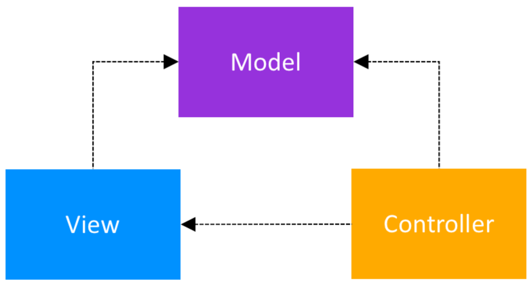

“When I need a particular complex object, how do I get one?” – Future You
- Builder
AlertDialog.Builder(this)
.setTitle("Metaphorical Sandwich Dialog")
.setMessage("Metaphorical message to please use the spicy mustard.")
.setNegativeButton("No thanks", { dialogInterface, i ->
// "No thanks" button was clicked
})
.setPositiveButton("OK", { dialogInterface, i ->
// "OK" button was clicked
})
.show() - Dependency injection
- Singleton
Dependency injection has you provide any objects required when you instantiate a new object; the new object doesn’t need to construct or customize the objects itself.
Commonly implemented using Dagger 2.
The Kotlin object keyword is used to declare a singleton
object ExampleSingleton {
fun exampleMethod() {
// ...
}
}
“So when I open up this class, how will I remember what’s it’s doing and how it’s put together?” – Future You
- Adapter
In software terms, this pattern lets two incompatible classes work together by converting the interface of a class into another interface the client expects.
List of people - RecyclerView doesn’t know what a Person is. Instead, it’s the adapter’s job to handle the data and send the bind command to the correct ViewHolder.
- Facade
The Facade pattern provides a higher-level interface that makes a set of other interfaces easier to use.

If your Activity needs a list of books, it should be able to ask a single object for that list without understanding the inner workings of your local storage, cache, and API client
Retrofit from Square is an open-source Android library that helps you implement the Facade pattern.
“So… how do I tell which class is responsible for what?” – Future You
- Command
When you order some excellent Saag Paneer at an Indian restaurant, you don’t necessarily know which cook will prepare your dish; you only give your order to the waiter, who posts the order in the kitchen for the next available cook.
Similarly, the Command pattern lets you issue requests without knowing the receiver.
EventBus
- Observer
The Observer pattern defines a one-to-many dependency between objects. When one object changes state, all of its dependents are notified and updated automatically.
In short, you define Observable objects that will emit values. These values can emit all at once, as a continuous stream, or at any rate and duration.
Subscriber objects will listen for these values and react to them as they arrive. For example, you can open a subscription when you make an API call, listen for the response from the server, and react accordingly.
The RxAndroid framework (aka Reactive Android)
apiService.getData(someData)
.subscribeOn(Schedulers.io())
.observeOn(AndroidSchedulers.mainThread())
.subscribe (/* an Observer */)
- MVC
- Model — the data layer, responsible for managing the business logic and handling network or database API.
- View — the UI layer — a visualisation of the data from the Model.
- Controller — the logic layer, gets notified of the user’s behavior and updates the Model as needed.
- MVP
- View = a passive interface that displays data and routes user actions to the Presenter. In Android, it is represented by Activity, Fragment, or View.
- Model = a layer that holds business logic, controls how data is created, stored, and modified. In Android, it is a data access layer such as database API or remote server API.
- Presenter = A middle man which retrieves data from Model and show it in the View. It also process user action forwarded to it by the View.
- View can not access Model
- Presenter is tied to a single View. (One-to-One relationship)
- View is completely dumb and passive (only retrieve user action and leave all other things for Presenter to handle).
- MVVM
- The View — that informs the ViewModel about the user’s actions
- The ViewModel — exposes streams of data relevant to the View
- The DataModel — abstracts the data source. The ViewModel works with the DataModel to get and save the data.
- the MVVM pattern was created to simplify the event driven programming of user interfaces.
- ViewModel has no information about the View